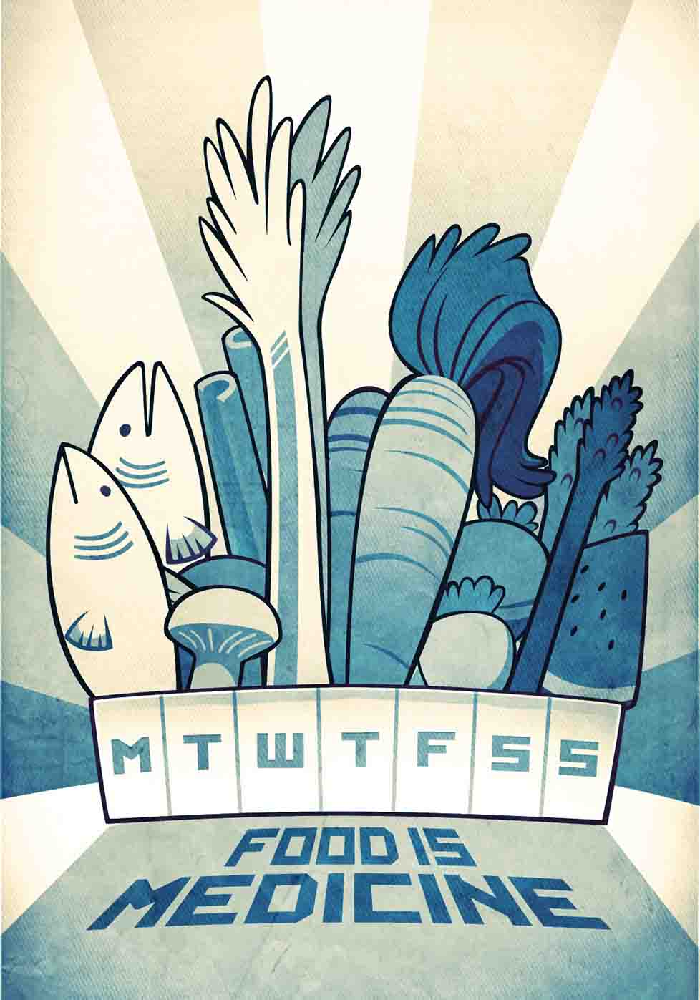

Food Is Medicine
"Let food be thy medicine and medicine thy food." Hippocrates, a physician in classical Greece, recommended this in 431 BC.
Physicians and nutritionists today are returning to his wisdom. While a medication or nutritional supplement typically isolates only a few beneficial chemicals, whole foods may contain thousands of phytonutrients that can enhance well being and illness resistance.
The food-as-medicine principles are worth studying and discussing with your doctor. Start here:
- Eat the rainbow, or a meal with a large variety of color, to insure diverse nutrients including antioxidants.
- Know how to combine foods — like apples with blueberries, or carrots with avocado — to increase the body's ability to absorb nutrients.
- Reduce sugar consumption, whether in processed or "natural" foods, juices, or beverages, to reduce triglycerides, blood pressure, and the body's storage of fat.
- Lower your dependence on meat, stick to lean cuts, and cook with methods, like broiling and poaching, that produce fewer carcinogens than high-flame methods.
- Seek nutrition counseling for your body's particular needs to perform as an athlete, heal after an injury or acute illness, or improve health with chronic conditions like diabetes, asthma, and allergies.
- Finally, address malnutrition in your community and help overcome hunger. For some families, getting access to enough food and the right food can be a major health boost.
